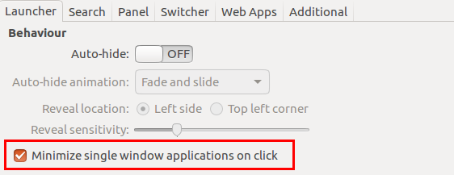
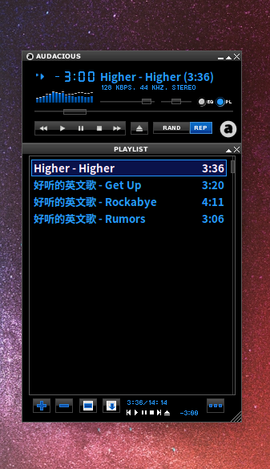
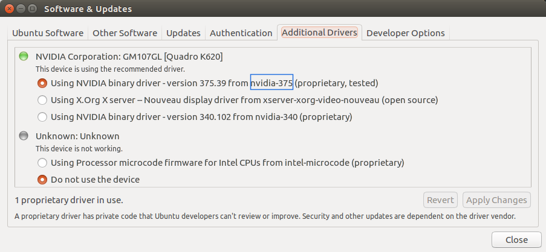
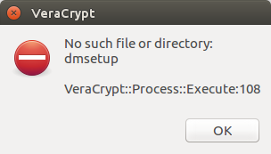
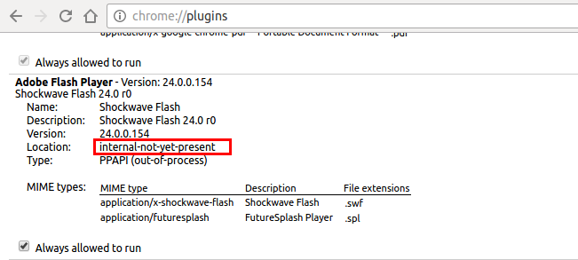
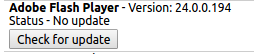
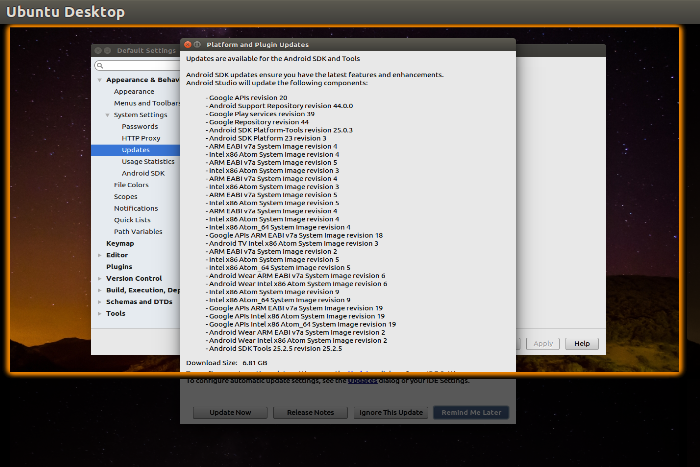

Latest update:2017-08-13 16:27:21
你有两种方式升级到Ubuntu 16.04,一种是从14.04升级,另一种是全新的安装16.04.两种方式我都尝试过了, 最后还是选择了全新安装.
升级前请务必备份你的原有系统
#安装最新软件包
sudo apt-get update && sudo apt-get dist-upgrade
#重启
sudo reboot
#升级(改命令执行后会出现GUI界面,选择升级即可,时间较长)
sudo update-manager -c
#升级完后查看
lsb_release -a
No LSB modules are available.
Distributor ID: Ubuntu
Description: Ubuntu 16.04.1 LTS
Release: 16.04
Codename: xenial
大部分可以参考文章
Ubuntu 14.04 TLS 极致配置,但是需要注意的是我已经 不推荐使用root用户作为日常使用的用户,以下都是以普通用户权限操作的.
wget https://launchpad.net/~fixnix/+archive/ubuntu/netspeed/+files/indicator-netspeed-unity_1.04-xenial0_amd64.deb sudo dpkg -i indicator-netspeed-unity_1.04-xenial0_amd64.deb
gsettings set com.canonical.Unity.Launcher launcher-position Bottom
wget https://dl.google.com/linux/direct/google-chrome-stable_current_amd64.deb
wget "https://launchpad.net/~hzwhuang/+archive/ubuntu/ss-qt5/+files/shadowsocks-qt5_2.8.0-1~ubuntu16.04.1_amd64.deb" wget "https://launchpad.net/~hzwhuang/+archive/ubuntu/ss-qt5/+files/shadowsocks-libqtshadowsocks_1.10.0-1~ubuntu16.04.1_amd64.deb" wget "https://launchpad.net/~hzwhuang/+archive/ubuntu/ss-qt5/+files/libqtshadowsocks_1.10.0-1~ubuntu16.04.1_amd64.deb" sudo dpkg -i libqtshadowsocks_1.10.0-1~ubuntu16.04.1_amd64.deb shadowsocks-libqtshadowsocks_1.10.0-1~ubuntu16.04.1_amd64.deb d shadowsocks-qt5_2.8.0-1~ubuntu16.04.1_amd64.deb
wget https://launchpad.net/~slgobinath/+archive/ubuntu/safeeyes/+files/safeeyes_1.1.4-1_amd64.deb sudo dpkg -i safeeyes_1.1.4-1_amd64.deb
sudo apt-get install unity-tweak-tool打开unity-tweak-tool后,进入Launcher,按图2设置: 
如果你希望将自己这周的任务写下来,放在桌面上,以提醒自己的话,你可以使用这个小软件: indicator-stickynotes, 直接到上面那个地址下载 deb 包,然后使用 dpkg 安装即可,对于 Ubuntu 16.04 x64的朋友,可以直接使用下面命令:
wget https://launchpadlibrarian.net/274677685/indicator-stickynotes_0.5.8-0~ppa1_all.deb sudo dpkg -i indicator-stickynotes_0.5.8-0~ppa1_all.deb
通常我喜欢网页直接打开网易的音乐播放主页,然后播放音乐, 但是有时候还是希望有一个简单的离线播放器来播放下载到本地的音乐. 这里推荐 netease-dl 作为下载器. 推荐使用 pip3 进行安装,安装命令如下:
pip3 install netease-dl
注意,这些工具随着网易提供的接口变化可能会失效,目前位置(2017-06-15)是可以使用的. 用法比较简单,比如说你想下载某个歌单,命令如下:
------➢ ⚔ $ netease-dl -l playlist --name 歌单名称
一般在线能听的歌曲都可以下载下来.
玩电脑时间越长,或者说随着接触的东西越来越多,越喜欢简洁干练的东西. Linux 下的许多音乐播放器功能设计复杂而没有人性的请参考 Rhythmbox, 这个软件我看到界面后直接就扔了.苦苦寻觅许久,终于找到了一个软件: Audacious, 安装方法很简单:
sudo apt install audacious
然后我们可以通过打开设置选择其样式为 Winamp 格式, 里面有几款很经典而不失优雅的皮肤,比如我用的就是下面这款:
正所谓纯粹而简单的才是真正的美.
grub 2 及其以上支持 png 图片作为背景图片,并且可以很方便的修改 grub 背景图片, 如下几个地方是 grub 依次寻找的图片位置:
convert a.jpg a.png接着打开 /etc/default/grub,确保里面的相应设置如下, 如果没有可以自己添加:
GRUB_DEFAULT=saved GRUB_SAVEDEFAULT=true #GRUB_HIDDEN_TIMEOUT=0
另外你也可以在 /etc/default/grub 中设置分辨率:
GRUB_GFXMODE=1600x1200,1280x1024,1024x768,800x600,640x480
最后执行 sudo update-grub即可.
可以先安装 Server 版本,然后安装桌面,再安装显卡驱动.使用下面命令查找最佳驱动:
sudo ubuntu-drivers list sudo ubuntu-drivers devices
然后选择推荐显卡驱动进行安装即可.
有一次,突然地,我发现我的 alt+tab 切换窗口就失灵了, 找了很多解决方法,比如安装 compiz 管理工具,重新安装桌面等等,这些都无效. 最后在 Unity Tewak 中找到了解决方法.打开 Unity Tweak 中选择 Unity/Switcher , 点击里面的 Restore Defaults 即可.
chown -R [your-user-name] ~/.local/share/gvfs-metadata/home
不过此时是 Index 起到书签的作用,bookmarks仍然是空的,很尴尬,但又不是不能用....
由于电脑死机,然后强制关机了.再打开就在登录界面循环了,进不去,解决方法如下:
sudo apt-get remove --purge nvidia-* sudo apt-get install ubuntu-desktop sudo rm /etc/X11/xorg.conf echo 'nouveau' | sudo tee -a /etc/modules sudo reboot
这个问题解决后,你很有可能会遇到 登陆后屏幕卡死的问题,往下看也有解决方法.
使用命令 dmesg | grep "eth0" 你会看到一行 eno1: renamed from eth0, 这个说明你的新的有线连接被重命名为 eno1,只需要修改网络配置文件 /etc/network/interfaces为如下即可:
auto eno1 iface eno1 inet dhcp然后重新启动网络配置: sudo /etc/init.d/networking restart
打开 软件和更新,转到 附加驱动,如下图:
我们可以看到一个 nvidia-375,因此使用下面的命令安装:
sudo apt install nvidia-375
然后再选择该显卡驱动,重启即可.
解决方法为删除配置文件,然后重启输入法:
rm -rf ~/.config/SogouPY* ~/.config/sogou*
错误提示如下
root@OpenWrt:~# scp username@192.168.2.102:~/Downloads/exo.torrent ./ /usr/bin/dbclient: Exited: Error connecting: Connection refused
Ubuntu 16.04默认似乎没有安装ssh服务器,安装一下就可以了:
sudo apt-get install openssh-server sudo ufw allow 22 #如果没有打开端口22,可以执行一下改命令
提示错误的截图如图3: 
解决方法:
sudo apt-get install dmsetup
这个原本是一个棘手的问题,我最初尝试了网上的多种方法解决,都无济于事. 最后发现最有效的方法是通过chrome自身来安装,我在Ubuntu的14.04和16.04上都测试通过了.
这种方法唯一的麻烦之处在于 代理.诺,你看我加粗了这俩字,可恶的GxW啊.下面我说这么个搞法.
正常情况下你在chrome的地址栏里面输入 chrome://plugins,你看的是如下图所示的:
里面显示的是 internal-not-yet-present,就是说,插件还没有安装呢!
现在我们安装,你需要有一个能越过藩篱的工具,那就蓝灯吧,由于shadowsocks全局代理不好开, 在Linux下用ss来是不行的.蓝灯打开后,会自动打开浏览器,记下地址栏里面的地址,一般是 http://localhost:PORT, PORT是一个端口,换上你的即可.
然后关闭浏览器,打开命令行,输入:
google-chrome --proxy-server="http://localhost:PORT"
打开浏览器后,地址栏输入 chrome://components,点击如下图所示的 Check for update,  更新完后,关闭浏览器,重新打开就可以啦.
描述一下我的主机情况,电脑上买回来的时候是 光驱+一个硬盘.后来我把光驱拆了,换上了一个SSD硬盘, 原来的硬盘当做数据盘使用了.ssd(sda)以及磁盘(sdb),我把两个系统Ubuntu和windows都安装在了ssd上, 使用grub检测的时候检测出来了windows,我刚开始没注意,在grub菜单中选择windows后进入, 提示 grub cannot get c/h/s values,很奇怪的问题,后来仔细一看,grub中显示的windows所在硬盘是sdb, 也就是原来磁盘上的系统,磁盘上的系统早就被我抹去了.解决方法很简单:我到了原来的磁盘上找了找,发现上面有一个 Boot文件夹, 将其拷贝到sda上对应分区的根目录下,然后再次 sudo update-grub就会输出Found windows 10 on /dev/sda2, 重启电脑,完美解决问题.
sudo apt-get purge fcitx-ui-qimpanel gsettings set com.canonical.indicator.datetime time-format 'custom' gsettings set com.canonical.indicator.datetime custom-time-format '%m月%d日 %A%H:%M:%S'
W: http://archive.ubuntukylin.com:10006/ubuntukylin/dists/xenial/InRelease: Signature by key 6CE35A4EBAB676094476BE7CD259B7555E1D3C58 uses weak digest algorithm (SHA1)
解决方法：将/etc/apt/sources.list.d/sogoupinyin.list中ubuntukylin所在行注释掉。
解决方法如下:
sudo apt remove vim* sudo apt install vim vim-gtk
UUID=255BEFE718361441 /mnt/fhub ntfs defaults,utf-8,uid=1000,gid=1000,dmask=022,fmask=033 0 1 UUID=0004B23B000EE1BB /mnt/core ntfs defaults,utf-8,uid=1000,gid=1000,dmask=022,fmask=033 0 1 UUID=0002C00100072AE8 /mnt/tools ntfs defaults,utf-8,uid=1000,gid=1000,dmask=022,fmask=033 0 1 UUID=000F8DAE00012599 /mnt/data ntfs defaults,utf-8,uid=1000,gid=1000,dmask=022,fmask=033 0 1 UUID=0000F2770007B1C7 /mnt/happy ntfs defaults,utf-8,uid=1000,gid=1000,dmask=022,fmask=033 0 1 UUID=0008F51E0003C0B4 /mnt/open ntfs defaults,utf-8,uid=1000,gid=1000,dmask=022,fmask=033 0 1 UUID=6A7666DC7666A911 /mnt/winos ntfs defaults,utf-8,uid=1000,gid=1000,dmask=022,fmask=033 0 1 UUID=0EBA05350EBA0535 /mnt/vos ntfs defaults,utf-8,uid=1000,gid=1000,dmask=022,fmask=033 0 1将其中uid和gid的值换成你的用户id和组id,重启电脑即可.
W: GPG error: http://archive.ubuntukylin.com:10006/ubuntukylin xenial InRelease: The following signatures couldn't be verified because the public key is not available: NO_PUBKEY 8D5A09DC9B929006 W: The repository 'http://archive.ubuntukylin.com:10006/ubuntukylin xenial InRelease' is not signed. N: Data from such a repository can't be authenticated and is therefore potentially dangerous to use. N: See apt-secure(8) manpage for repository creation and user configuration details.解决方法:
#注意最后那个公钥应该换为你自己的 apt-key adv --keyserver keyserver.ubuntu.com --recv-keys 8D5A09DC9B929006 #清理缓存并更新源 cd /var/lib/apt #rm -rf lists.old #如果有lists.old的话 mv lists lists.old apt-get clean apt-get update
如果出现问题请以root身份删除/var/lib/apt/lists/文件夹并且 将/var/lib/apt/lists.old/文件夹重命名为/var/lib/apt/lists/以恢复.
先运行wget,没有任何问题 root@shell:~# wget wget: missing URL Usage: wget [OPTION]... [URL]...运行wget没问题时查看依赖库 Try `wget --help' for more options. root@shell:~# ldd /usr/bin/wget linux-vdso.so.1 => (0x00007ffda79e0000) libpcre.so.3 => /lib/x86_64-linux-gnu/libpcre.so.3 (0x00007f7f0a00e000) libuuid.so.1 => /lib/x86_64-linux-gnu/libuuid.so.1 (0x00007f7f09e06000) libssl.so.1.0.0 => /lib/x86_64-linux-gnu/libssl.so.1.0.0 (0x00007f7f09b96000) libcrypto.so.1.0.0 => /lib/x86_64-linux-gnu/libcrypto.so.1.0.0 (0x00007f7f09736000) libz.so.1 => /lib/x86_64-linux-gnu/libz.so.1 (0x00007f7f09516000) libidn.so.11 => /usr/lib/x86_64-linux-gnu/libidn.so.11 (0x00007f7f092de000) libc.so.6 => /lib/x86_64-linux-gnu/libc.so.6 (0x00007f7f08f0e000) libpthread.so.0 => /lib/x86_64-linux-gnu/libpthread.so.0 (0x00007f7f08cee000) /lib64/ld-linux-x86-64.so.2 (0x000055cecc253000) libdl.so.2 => /lib/x86_64-linux-gnu/libdl.so.2 (0x00007f7f08ae6000)再运行一次tsocks root@shell:~# tsockswget Segmentation fault了 root@shell:~# wget Segmentation faultwget Segmentation fault时查看依赖项 root@shell:~# ldd /usr/bin/wget linux-vdso.so.1 => (0x00007ffe33548000) /usr/lib/libtsocks.so (0x00007f177047e000) libpcre.so.3 => /lib/x86_64-linux-gnu/libpcre.so.3 (0x00007f17701de000) libuuid.so.1 => /lib/x86_64-linux-gnu/libuuid.so.1 (0x00007f176ffd6000) libssl.so.1.0.0 => /lib/x86_64-linux-gnu/libssl.so.1.0.0 (0x00007f176fd66000) libcrypto.so.1.0.0 => /lib/x86_64-linux-gnu/libcrypto.so.1.0.0 (0x00007f176f906000) libz.so.1 => /lib/x86_64-linux-gnu/libz.so.1 (0x00007f176f6e6000) libidn.so.11 => /usr/lib/x86_64-linux-gnu/libidn.so.11 (0x00007f176f4ae000) libc.so.6 => /lib/x86_64-linux-gnu/libc.so.6 (0x00007f176f0de000) libdl.so.2 => /lib/x86_64-linux-gnu/libdl.so.2 (0x00007f176eed6000) libpthread.so.0 => /lib/x86_64-linux-gnu/libpthread.so.0 (0x00007f176ecb6000) /lib64/ld-linux-x86-64.so.2 (0x00005631b4af5000)诡异的事情发生了,输入exit退出shell,结果好像是从一个内嵌shell退出了 root@shell:~# exit exit再执行wget,没有任何问题 root@shell:~# wget wget: missing URL Usage: wget [OPTION]... [URL]... Try `wget --help' for more options.
虽然丈二和尚摸不到头脑,怎么运行了一下tsocks,wget就依赖libtsocks.so这个库了...ubuntu 14.04
上完全没有事情.
于是我搜了一下,居然搜索到了,有人已经解决了:在这里.
apt-get build-dep tsocks apt-get source tsocks wget http://bugs.launchpad.net/ubuntu/+source/tsocks/+bug/1574270/+attachment/4655719/+files/07_always_init_function_pointers.dpatch cp 07_always_init_function_pointers.dpatch tsocks-1.8beta5/debian/patches/ echo -e "\n07_always_init_function_pointers.dpatch" >> tsocks-1.8beta5/debian/patches/00list cd tsocks-1.8beta5/ dpkg-buildpackage -us -uc apt-get purge tsocks dpkg --install ../tsocks_1.8beta5-9.3_amd64.deb你也可以直接去文末的下载链接中下载已经打完补丁的安装包.
这个问题目前还没有有效的解决方法,我推测这很有可能是因为我安装了两个系统Windows 10和Ubuntu所导致的. 庆幸的是,这个问题不经常出现,如果出现了,开机后,注销一下,再登录就好了.
这个问题看起来让人有点很尴尬,症状就如下图:
我截图的时候只好用使用工作空间的缩图来说明这种尴尬的问题,解决方法很简单,按住alt键, 然后就可以拖动窗口了,知道下面的按钮出现在你的视野中.
(nautilus:2810): GLib-GIO-CRITICAL **: g_dbus_interface_skeleton_unexport: assertion 'interface_->priv->connections != NULL' failed (nautilus:2810): GLib-GIO-CRITICAL **: g_dbus_interface_skeleton_unexport: assertion 'interface_->priv->connections != NULL' failed (nautilus:2810): Gtk-CRITICAL **: gtk_icon_theme_get_for_screen: assertion 'GDK_IS_SCREEN (screen)' failed (nautilus:2810): GLib-GObject-WARNING **: invalid (NULL) pointer instance (nautilus:2810): GLib-GObject-CRITICAL **: g_signal_connect_object: assertion 'G_TYPE_CHECK_INSTANCE (instance)' failed这个问题暂时未解决掉.